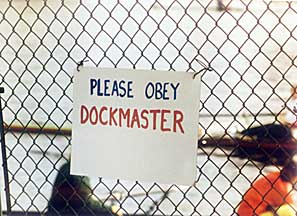
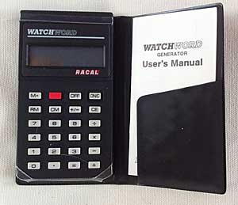

Loading
Location

 US National Security Agency, Linthicum, Maryland (at the Friendship Annex site) to support the mission of the National Computer Security Center.
US National Security Agency, Linthicum, Maryland (at the Friendship Annex site) to support the mission of the National Computer Security Center.
First Installed
DPS 8/70(M) in July, 1984 as a basic 1 CPU system.
Expanded to a 3 cpu, 2 SCU, 2 IOM system in 1986.
Final Shutdown
March 31, 1998. Supposedly replaced by a Data General Unix System V machine running MLS Informix.
Current Location of hardware
DOCKMASTER's hardware is now the property of the  National Cryptologic Museum,
and is on permanent loan to
National Cryptologic Museum,
and is on permanent loan to  The Computer History Museum.
Eugene Miya was instrumental in arranging this loan.
The DPS8/70M hardware (minus the HDAs for the hard disks) arrived in Mountain View, CA at the end of June 1999.
For more information about the current state of the DOCKMASTER hardware and the Computer History Museum's plans for preservation and display of Multics artifacts,
please contact Dag Spicer, the Curator & Manager of Historical Collections, The Computer History Museum, at +1 650 810-1035.
Ed Thelen has a
The Computer History Museum.
Eugene Miya was instrumental in arranging this loan.
The DPS8/70M hardware (minus the HDAs for the hard disks) arrived in Mountain View, CA at the end of June 1999.
For more information about the current state of the DOCKMASTER hardware and the Computer History Museum's plans for preservation and display of Multics artifacts,
please contact Dag Spicer, the Curator & Manager of Historical Collections, The Computer History Museum, at +1 650 810-1035.
Ed Thelen has a  page about the DOCKMASTER machine with a picture.
page about the DOCKMASTER machine with a picture.
Configuration: (1986)
3 DPS8/70M CPUs,
2 IOMs,
3 DN355 front-end processors,
8M 36-bit words MOS memory,
4 MW paging device (bulk store),
3 MSU451 disk drives,
22 MSU501 disk drives,
3 tape drives,
2 printers,
ARPANet connection (ABSI).
Application Areas
[Les Gotch] DOCKMASTER's major responsibility was to serve as a resource facility for Computer Security. It provided many services including electronic mail and forum for the NSA, its vendors, academia, and other government agencies. One of its missions was to provide assistance in the evaluation of commercial products using the Trusted Computer System Evaluation Criteria (Orange Book).
The Department of Energy Electronic Resources for Security Related Information published in 1994 says:
DOCKMASTER is a (Multics-based) subscription service of the National Computer Security Center (NCSC), that they consider an "Information Security Showcase." Its large repertoire of available services (its users manual is over one hundred pages) includes E-mail, electronic bulletin boards, and allows hands-on software evaluation. Its Evaluated Products List rates computers and computer security products. Users can access online documents (such as the Orange Book), participate in online discussions, and learn about computer security conferences. Users can connect to DOCKMASTER through MILNET (part of the Internet), TYMNET (a packet switching service), and local dial-in. A registration packet may be requested by writing to NCSC, Fort George G. Meade, MD 20755-6000, Attn: DOCKMASTER Accounts Administrator. Note that Federal employees are "User Type 3", contractors are "User Type 6" and the project should be "Catwalk" unless you were specifically assigned another one.
Project OPENAIR allowed community users to get accounts on DOCKMASTER in order to read NCSC information. The project included special accounts on the machine and a menu driven command called "openair" that provided access to documents from the Products and Services catalog. Documents on security, viruses, etc were also made available in the >site>net and >site>pubs directories.
Some of the publicly available forum discussions hosted on DOCKMASTER (in 1994) were:
- CERT-TOOLS
- Compusec_Papers_Database
- Computer_Security_Day
- Conferences
- Criteria
- DDN-News
- ETHICS-L
- IEEE_Cipher
- Legislative_Issues
- NBS_Conference
- Nuance_Discussion
- RISKS
- Security_Discussion
- Site_Security_Policy
- Tech_Guidelines_Info_Forum
- Training_courses
- VIRUS-L
- WG-Security
- announce
- cert/accreditation
- epl
- privacy_enhanced_mail
- privacy-digest
- privacy-issues
Salesman
The initial purchase was through the Federal Systems Division of Honeywell, Inc.
Site Analysts
[Les Gotch] There have been three major analysts assigned to DOCKMASTER including Ed Tomasch (1984 - 1986), Les Gotch (1984 - 1998), and Tony Thibodeaux (1986 - 1998). Additional short term assistance was provided by Allen Grider, Joe Paradiso, and Patrick Graham. All worked for Honeywell's Federal Systems Division and its subsequent names as the company went through a variety of buyouts and sell-offs.
System Administrators
[Les Gotch] The site analysts listed in the previous category have been the primary system administrators through the years. There have been a few (to remain unnamed) government employees that have filled system administration roles through the years as well.
Notable Developments
[Les Gotch] Expanded the Access Isolation Mechanism (AIM) of Multics to use the full 72 bits available. The extra 18 bits were used to designate over 40,000 extra mutually exclusive categories by using bit patterns of 18 bits - nine at a time. Each mutually exclusive bit pattern is used to define a category used by vendors to protect their data. The 18 bits supplied in the normal Multics system were not enough to support the evaluation of the large number of commercial products supplied by vendors to be evaluated by the Agency.
[Les Gotch] DOCKMASTER also incorporated the use of token one-time password devices into the I&A procedures when logging in.
Notable Applications
Multics Intrusion Detection and Alerting System (MIDAS). MIDAS was developed by the NCSC in 1988 to analyze data from DOCKMASTER. Filtered Multics AIM Audit records and other information captured on Multics was sent to a Symbolics Lisp machine that built up knowledge of normal user behavior and system state.
Anecdotes
[Les Gotch] On the origin of the name: All NSA systems are required to get a covername for themselves. It is an internal practice so that people can refer to each system as a covername. It makes it easy to know what system people are talking about in reports and conversations. So we picked that name off the available list of names.
[Allen Grider] While DOCKMASTER did not contain classified information, it did contain proprietary information that the government protected nearly as well as its own secrets. I will have to talk to some of the last system analysts and see what was shipped out. We did have the system well partitioned with a root lv containing most of the system stuff and most proprietary information out on a user lv. Don't remember the details. It has been a long time since I worked on the system.
[Allen Grider] What has been lost?
[Allen Grider] My hacks to extend the categories to N mutually exclusive security categories. Neat hack. Used the left half of the word the security categories were stored in (right half was the standard categories). Used combinations of 9 one bits (9 zero bits). The nice part was that hard core did not have to change (since hard core did the comparison using the whole word). The really hard part was to come up with an efficient algorithm to give an index for a 9 of 18 bit pattern (so we could index into a table and display something intelligent to the user). Turned out to be a Fibonacci series problem. 18 categories was not enough to isolate all the companies proprietary information that was stored on DOCKMASTER (basically information on every system that was in or had been in TCSEC evaluation). 36 categories was not considered enough either (this would have been easy to implement also). I will have to dig around in my notes and see if I still have anything on this.

WATCHWORD used by THVV to access DOCKMASTER on the MWM project in the mid 90s. Click for a larger view.
[Allen Grider] An implementation of the WATCHWORD one time password system. During login, you were supplied with a challenge (a string of numbers). You had to type the numbers into the WATCHWORD device (looked like a little calculator, actually worked as one) along with a PIN. The WATCHWORD device generated a response. The user then typed in the response. The challenge was generated by a PC hanging off of the Multics system. At the same time a expected response was supplied by the PC, so all Multics had to do was to receive the response from the user and compare it with the expected response. (WATCHWORD has disappeared from the Thales web site.)
[Olin Sibert] The WATCHWORD system was the first exposure many users had to the now-common idea of a one-time password mechanism. It was certainly a novelty for me, and with vague ideas about cryptanalysis, I made a habit of collecting every challenge/response pair I was ever presented with. Well, I never learned anything about the cryptography, but after a few years of this, I did discover that it was really a two-time password system: a small percentage of the challenges I got were duplicates! Of course, even though the actual risk seemed pretty negligible, any cryptographer knows that reusing key material is the road to catastrophe, so I quickly reported the problem. After some time trying to figure it out, Les Gotch, Alan Grider, and others finally realized that the problem was caused by backup procedures. There were two WATCHWORD servers, so that if one failed, the other could take over transparently and people could still log in. However, when the failed one was restored to health by reloading its data, it could end up with stale data and start producing the same challenges over again. They fixed the procedures and the duplicates stopped, but I continued to collect challenges for years hoping to find another chink in the armor. Secure backup can be harder than it looks!
[RISKS 3.31] The DOCKMASTER IMP was hit by lightning in July 1986 and was down for many weeks.
[Eugene Miya] Don't forget DOCKMASTER is mentioned in Cliff Stoll's The Cuckoo's Egg.
Thanks to Les Gotch, Allen Grider, Olin Sibert, Eugene Miya, Ed Thelen, and Jeff Makey for information.
Login Banner
Found this on the Internet
[foo(~)] t dockmaster.ncsc.mil Trying 198.26.55.74... Connected to dockmaster.ncsc.mil. Escape character is '^]'. NOTICE AND CONSENT LOG-ON BANNER This is a department of defense computer system. This computer system, including all related equipment, networks and network devices (specifically including internet access), are provided only for authorized U.S.Government use. DoD computer systems may be monitored for all lawful purposes, including to ensure that their use is authorized, for management of the system, to facilitate protection against unauthorized access, and to verify security procedures, survivability and operational security. Monitoring includes active attacks by authorized DoD entities to test or verify the security of this system. During monitoring, information may be examined, recorded, copied and used for authorized purposes. All information, including personal information, placed on or sent over this system may be monitored. Use of this DoD computer system, authorized or unauthorized, constitutes consent to monitoring of this system. Unauthorized use may subject you to criminal prosecution. Evidence of unauthorized use collected during monitoring may be used for administrative, criminal or other adverse action. use of this system constitutes consent to monitoring for these purposes. UNCLASSIFIED SYSTEM Multics MR12.3b: DOCKMASTER (Channel sty.s_telnet_002) Load = 29.0 out of 140.0 units: users = 29, 09/29/97 1226.2 edt Mon telnet> q Connection closed.
The story about the who command also has some terminal output from DOCKMASTER.